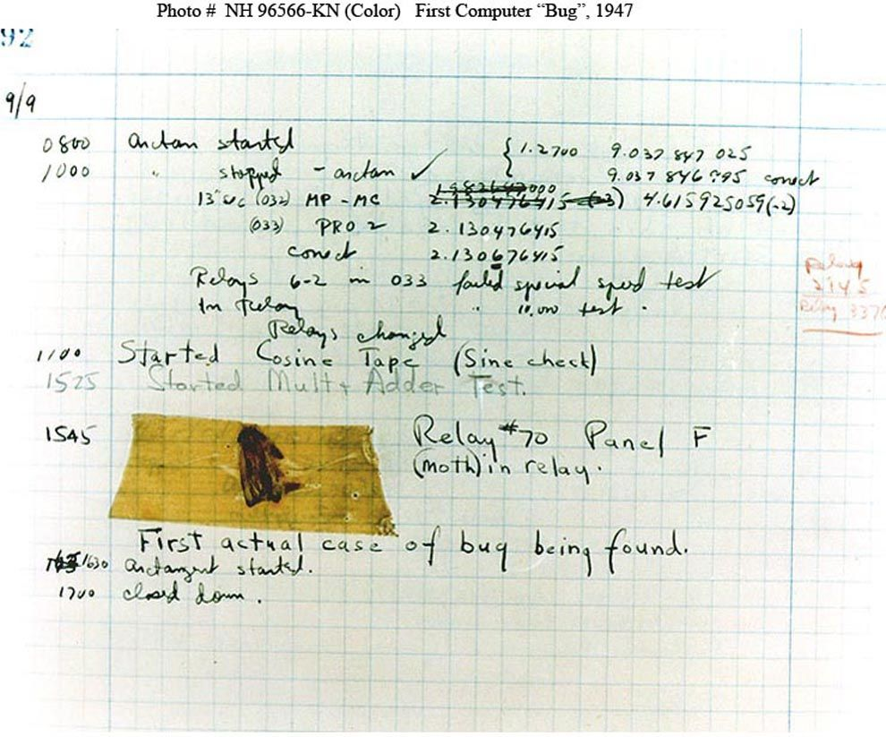

Background
She was born in New York City in 1906, Grace Hopper joined the U.S. Navy during World War II, there she was assigned to program the Mark I computer.
The IBM Automatic Sequence Controlled Calculator, called Mark I by Harvard University’s staff, was a general purpose electromechanical computer that was used in the war effort during the last part of World War II.
Accomplishments
After the war ended she decided to continue working with computers which later on led to the popular COBOL language.
COBOL is basically a high level programming language used for business applications
Grace Hopper also created the A-0 system (Arithmetic Language version 0), in 1951 and 1952 for the UNIVAC I, it was the first compiler ever developed for an electronic computer.
UNIVAC I is the name of the first commercial computer produced in the United States
Compiler: program that converts instructions into a machine-code or lower-level form so that they can be read and executed by a computer.
Fun Fact

The term "debugging" used in the technology field originated because of Grace Hopper and the team she was working with on Mark I. The machine that they were working with was giving them trouble, so they decided to take a look at it. When they opened up the computer's hardware they found a moth. From then on the word bug was used to describe a computer glitch.